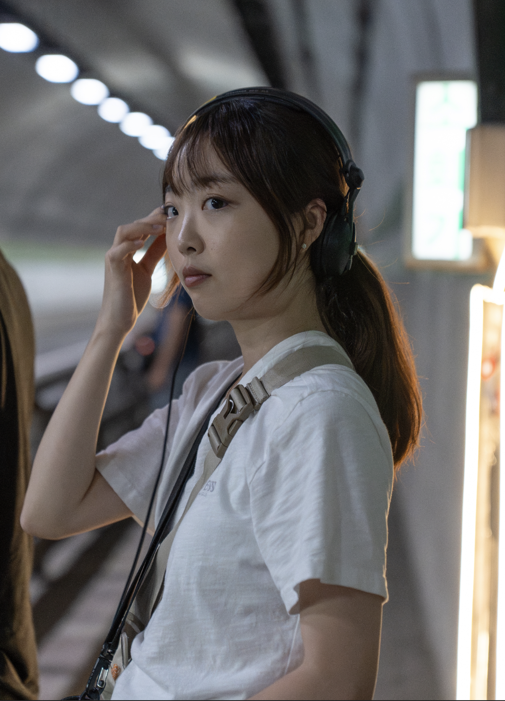
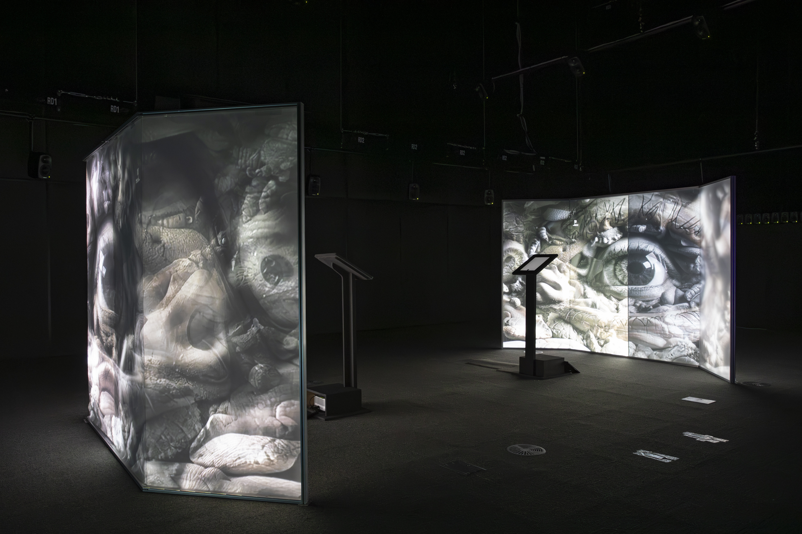
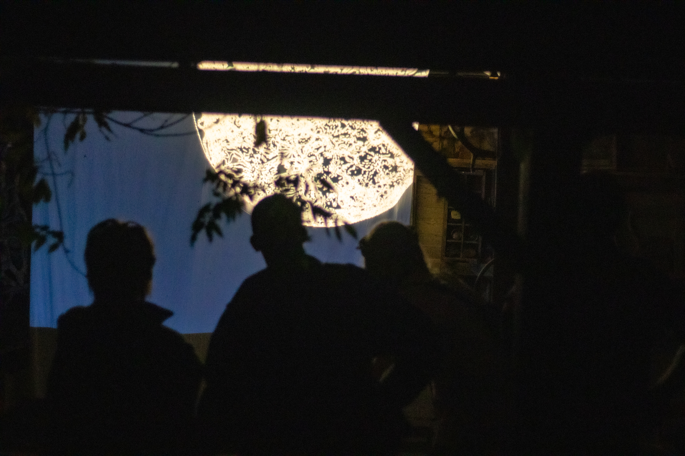

Eunsong Shin's practice centers on transforming personal perception into sound. Rooted in autobiographical narratives and sensory experience, her work explores listening as a site of memory, embodiment, and spatial awareness.
She works with electroacoustic media, AI, spatial sound, field recording, and sound installation to expand the expressive possibilities of sonic environments.

Cities such as Seoul exist within constantly shifting soundscapes. What we commonly refer to as "urban sound" usually consists of the audible center of the city: traffic noise, music flowing from commercial buildings, fragments of conversation—sounds that are familiar, visible, and easily legible within everyday life. Yet beneath this surface lies another acoustic layer: spaces and sounds that are marginalized, excluded, or deliberately rendered invisible.
This project is based on field recordings collected from sites in Seoul often labeled as "undesirable facilities"—waste incineration plants, areas scheduled for redevelopment, and public cemeteries. Rather than treating these recordings as neutral environmental sound, this work approaches them as acoustic testimonies. By reconfiguring and recontextualizing these marginalized sonic materials, the project seeks to expose the hierarchical structures that organize the city and to invite audiences to encounter an unfamiliar face of the urban environment.

Tefillah: Contactless Contact is not a prayer meant to convey information, but one that functions as a form of language prior to meaning. It operates as a mode of communication without a specific addressee—an act of "relation-making."
Prayer, even in the absence of a defined recipient, takes the form of speech directed toward something or someone, while simultaneously holding the potential for open connection with anyone. This work explores prayer as a relational act: a way of speaking that resonates beyond directionality, a structure of relation formed within absence, and a space where the linguistic musicality of repetition, recitation, and murmuring comes to the fore.

Photo: National Asian Culture Center Sound Lab
Corpus Ambitus — Far is a performance-based work that extends the Asia Culture Center (ACC) Sound Lab's ongoing research project The Future of Listening, initiated in 2023, and its broader Body series. The piece reexamines human sensory perception and identity amid rapidly evolving technological listening environments.
The work focuses on the blurring and reversal of boundaries between the subject of perception (the body) and the object (the environment) in a future society. Technology extends the body beyond its physical limitations, while our senses begin to perceive multiple spatial layers simultaneously—real and virtual, interior and exterior. On stage, four virtual spaces unfold, each with distinct scales and atmospheres. The sound is deliberately misaligned with the visual information, intentionally destabilizing sensory balance. Surrounding the stage and audience, a main screen and an eight-channel speaker system construct an audiovisual environment combining bodily imagery with variations of corporeal sound.
The dancers' movements traverse between the real and the virtual, visualizing sensory confusion, expansion, and estrangement from one's own body. In this process, "listening" shifts beyond passive hearing and becomes a medium for reexamining the relationships between sensation, environment, and technology.

Photo: National Asian Culture Center Sound Lab
Based on the performance Corpus Ambitus: Far, Corpus Ambitus: Near transforms the piece into an interactive installation that lets visitors directly experience the relationship between body and technology. Developed within the research framework The Futures of Listening, it invites audiences to explore sound experimentation and shifts in body–space perception at close range, turning the exhibition space into a sensory laboratory.
With minimal gestures — like moving a finger — visitors alter both video and sound in real time. The space is equipped with a 32-channel sound system. The sound resonates with or diverges from visual information, shifting the audience's 'position in sound'. Beyond mere interaction, this unfolds as an act of 'restructuring space through the body.'
In this way, the visitor ceases to be a passive observer and becomes part of the work–technology system. The piece also investigates how a performance-based work can be reanimated in "static" installation form — reviving auditory and bodily perception within the gallery and prompting philosophical questions about listening, embodiment, and agency at the nexus of art and technology.

Be Brave! II is an expanded exhibition version of the performance work Be Brave! (2024). The toy parrots move beyond their original functional roles, displaying distinct reactions and movements as they gradually transform into autonomous presences. The audience's intervention is not a simple act of control, but part of the process through which these entities begin to awaken to a sense of agency.
Once operating through repetition and imitation, the toys slowly seek out their own voices. Through moments of transformation, Be Brave! II traces how speaking and moving figures break away from assigned roles and move toward forms of expression of their own making.

A miniature car moving along a rail generates a single trajectory of sound through a small speaker. As it moves, the sound continuously circulates and shifts within the space. The sound does not exist in a fixed form; it is perceived differently depending on movement and position.
According to where the audience stands and how the miniature car travels, the timbre and direction change, and even the same sound is transformed into distinct auditory experiences. The repeated motion forms a steady rhythm, yet subtle variations emerge over time. Within these shifts, the sound overlaps and misaligns, reorganizing itself into new configurations in space.

This piece was inspired by a cute pink flamingo plush toy that mimics speech and dances. The toy is fully dedicated to its simple functions, repeating its assigned roles. Watching it, I felt a certain resemblance to myself.
Familiarity provides comfort and stability. Changing these familiar patterns is not easy, and sometimes, the need for change doesn't even cross our minds. Yet, I find myself wondering about the possibilities that lie beyond those limitations. One thing is certain—it would be more amusing than tedious. And so, I choose to Be Brave.

When deadlines are looming or when I need to accomplish something in a short span of time, I seem to exhibit almost superhuman abilities. My state of concentration felt akin to an "Impulse Wave." An "impulse" is a brief, sharp sound that emits powerful energy. In this piece, I utilized just one impulse as the source of sound. That impulse is showcased in various dazzling forms within the piece. This work was created for WFS (Wave Field Synthesis) and was produced using WFSCollider.

Photo: @blonkerstudio
A digitized world, wherein your attention is a commodity. Focus is absorbed, and our senses overstimulated. You are the product. Remind yourself to unplug.

My piece, "Real Reality," is an electro-acoustic work for two violins and electronic music. It explores the difference between imagination and reality. While our imagined reality is often romanticized and hopeful, the actual reality can be colder and harsher than expected. Ideals can sometimes weaken hope or lead to great disappointment, but by confronting real reality, we can engage in deep reflection and personal growth.

The piece "Engrave" began with an old video stored on my computer. This video evoked a distant yet warm emotion that I hadn't felt in a long time. I composed this piece to revisit those nostalgic fragments in a way that I could always remember. This piece was composed using only the video and its original audio as the sole sound source.

We sometimes criticize or judge others negatively, only to realize at some point that we share similarities with them. When I recognize that the actions I once condemned and the attitudes I once despised have unknowingly taken root within me, I am compelled to ask myself: Do I truly have the right to judge others? In the end, we are all fundamentally alike.

Goal Setting & Carrying On consists of three parts. The first implies the thoughtful process on the plans to be made, the second part implies the process of setting up the actual goal, and the third part implies the discipline whilst going through those times, which reconciles the feeling of accomplishment and failure. At the end of the piece, a figure from the first part reiterates, embracing that the cycle of setting goals will repeat. For the instrumentation, the full dynamic range of the snare drum was used in various techniques. The sound is processed real-time through MAX/MSP.

Zing: to move very quickly and make a humming sound. Using Max/MSP, I made a sound synthesis patch of additive synthesis and frequency modulation (FM) and used various envelopes to directly create and use sound sources with different tones. The movement of space, tension and relaxation, the consonant and the dissonant, and the contrast of textures were considered.